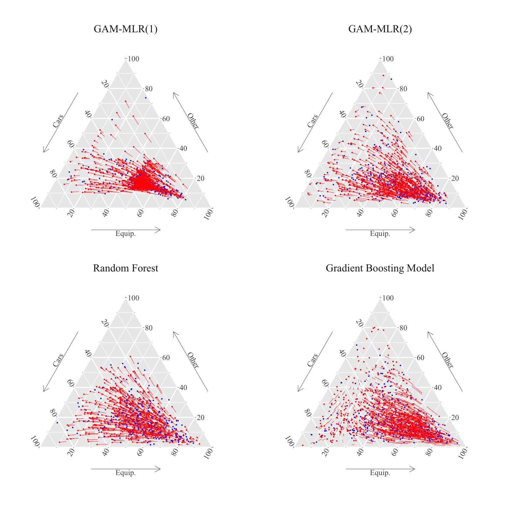
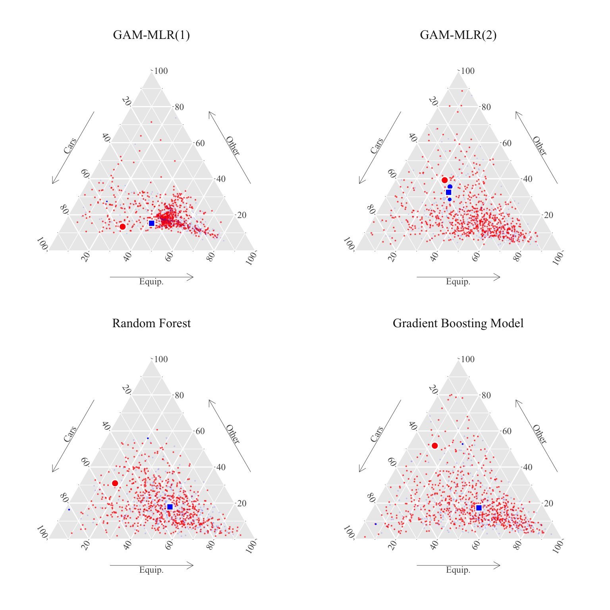

We apply the two methods presented in Chapter 1 to build counterfactuals for a categorical feature.
Recall that the first method, outlined in Algorithm 1.1, consists in using Gaussian optimal transport based on an alternative representation of the probability vector (in the Euclidean space \(\mathbb{R}^{d-1}\)).
The second method uses transport and matching directly within the simplex \(\mathcal{S}_d\) using an appropriate cost function.
For a categorical feature \(\mathbf{x}_j\) with \(d\) categories, we fit a model \(\widehat{m}(\mathbf{x}_j|\mathbf{x}_{-j})\) using a multinomial loss, yielding predicted scores \(\widehat{\mathbf{x}}_j\in\mathcal{S}_d\). We then apply Algorithm 1.1 (first method) to transport \(\widehat{\mathbf{x}}_j|s=0\) to the counterfactual \(\widehat{\mathbf{x}}_j|s=1\) in \(\mathcal{S}_d\). Then, we apply Algorithm 1.2 (second method) to build the counterfactuals using matching in \(\mathcal{S}_d\).
We illustrate the procedure with the German Credit dataset (Hofmann (1994)). Specifically, we transport the variable Purpose (\(\mathbf{x}_j\)), a factor with ten levels indicating loan purposes, conditioned on gender (\(s\)), encoded as a binary variable.
To facilitate visualization using ternary graphs, we recode Purpose into three categories: “cars,” “equipment,” and “other.” Our goal is to construct a counterfactual loan purpose assuming individuals had a different gender.
library(tidyverse)
── Attaching core tidyverse packages ──────────────────────── tidyverse 2.0.0 ──
✔ dplyr 1.1.4 ✔ readr 2.1.5
✔ forcats 1.0.0 ✔ stringr 1.5.1
✔ ggplot2 3.5.1 ✔ tibble 3.2.1
✔ lubridate 1.9.4 ✔ tidyr 1.3.1
✔ purrr 1.0.2
── Conflicts ────────────────────────────────────────── tidyverse_conflicts() ──
✖ dplyr::filter() masks stats::filter()
✖ dplyr::lag() masks stats::lag()
ℹ Use the conflicted package (<http://conflicted.r-lib.org/>) to force all conflicts to become errors
library(devtools)
Loading required package: usethis
library(ggtern)
Registered S3 methods overwritten by 'ggtern':
method from
grid.draw.ggplot ggplot2
plot.ggplot ggplot2
print.ggplot ggplot2
--
Remember to cite, run citation(package = 'ggtern') for further info.
--
Attaching package: 'ggtern'
The following objects are masked from 'package:ggplot2':
aes, annotate, ggplot, ggplot_build, ggplot_gtable, ggplotGrob,
ggsave, layer_data, theme_bw, theme_classic, theme_dark,
theme_gray, theme_light, theme_linedraw, theme_minimal, theme_void
# load the functions from our package to perform optimal transport on # compositional dataload_all("../../")
ℹ Loading transportsimplex
Definition of a ggplot2 theme.
#' Theme for ggplot2#'#' @param ... arguments passed to the theme function#' @export#' @importFrom ggplot2 element_rect element_text element_blank element_line unit#' reltheme_paper <-function(...) {theme(text =element_text(family ="Times New Roman"),plot.background =element_rect(fill ="transparent", color =NA),legend.text =element_text(size =rel(1.1)),legend.title =element_text(size =rel(1.1)),legend.background =element_rect(fill ="transparent", linetype="solid", colour ="black"),legend.position ="bottom",legend.direction ="horizontal",legend.box ="vertical",legend.key =element_blank(),panel.spacing =unit(1, "lines"),plot.title =element_text(hjust =0, size =rel(1.3), face ="bold"),plot.title.position ="plot",strip.background =element_rect(fill =NA, colour =NA),strip.text =element_text(size =rel(1.1)) )}
We want to transport the Purpose variable, which has 10 different levels in the dataset. To be able to visualize the transport, we merge some of the classes together to obtain three main purposes: cars, equipment, and other.
We fit four models, \(\widehat{m}^{(k)}(\mathbf{x}_j|\mathbf{x}_{-j})\), using a multinomial loss, yielding predicted scores \(\widehat{\mathbf{x}}_{j}^{(k)}\in\mathcal{S}_d\) for \(k \in \{1,2,3,4\}\). The sensitive attribute \(s\) and the credit risk variable (Bad/Good)–typically the target variable in this dataset but not in our case–are excluded from estimation. The four models are:
GAM-MLR (1): A multinomial model with splines for three continuous variables.
GAM-MLR (2): A multinomial model with splines for three continuous variables and seven additional predictors.
Random Forest: A classifier using all available variables.
Gradient Boosting Model: A GBM trained on all available variables.
The estimation of GAM-MLR (1):
library(splines)require(nnet)
Loading required package: nnet
set.seed(123)model_glm_1 <-multinom( Purpose ~bs(Credit_amount) +bs(Age) +bs(Duration), data = german.credit)
# weights: 33 (20 variable)
initial value 1098.612289
iter 10 value 984.769274
iter 20 value 982.287732
final value 982.287248
converged
# weights: 105 (68 variable)
initial value 1098.612289
iter 10 value 955.629654
iter 20 value 934.033840
iter 30 value 931.711611
iter 40 value 930.922840
iter 50 value 930.662446
iter 60 value 930.649598
final value 930.649264
converged
The estimation of the random forest:
library(randomForest)model_rf <-randomForest(Purpose ~ ., data = german.credit[, -c(20,21)])
Table 2.1: Mappings from the purpose categorical variable \(x\) to the compositional one \(\tilde{\mathbf{x}}\), for four individuals of the dataset.
Predicted Scores
Purpose
Gender
cars
equipment
other
GAM-MLR(1)
equipment
Male
0.1838
0.6156
0.2006
cars
Female
0.4086
0.4238
0.1676
equipment
Male
0.1941
0.7082
0.0977
cars
Female
0.4704
0.2683
0.2613
GAM-MLR(2)
equipment
Male
0.0922
0.7592
0.1486
cars
Female
0.4680
0.2406
0.2914
equipment
Male
0.1123
0.7907
0.0971
cars
Female
0.5074
0.2698
0.2228
Random Forest
equipment
Male
0.2265
0.4972
0.2762
cars
Female
0.3457
0.3138
0.3404
equipment
Male
0.1685
0.7609
0.0707
cars
Female
0.4492
0.3476
0.2032
Gradient Boosting Model
equipment
Male
0.0999
0.6904
0.2097
cars
Female
0.5859
0.1415
0.2725
equipment
Male
0.1137
0.7613
0.1250
cars
Female
0.5011
0.2523
0.2466
2.3 Optimal Transport in the Euclidean Representation
We can now apply Algorithm 1.1 with a Gaussian mapping in an Euclidean representation space to transport from observed \(\widehat{\mathbf{x}}_j|s=0\) (scores for women) to counterfactual \(\widehat{\mathbf{x}}_j|s=1\) (scores for men), in \(\mathcal{S}_d\).
Then, we create matrices for each model with the predicted scores for each category, i.e., the representation of the categorical variable Purpose in the unit simplex.
We can then have a look at the percentage of each purpose category in the initial dataset, compare it with the average predicted score of each category for each model, and with the average of the transported predicted score for women.
Codes to create the Table.
# Proportions of each purpose level by gender in the datasetprop_purposes <- german.credit |>count(Purpose, Gender) |>group_by(Gender) |>mutate(prop = n /sum(n)) |>select(-n) |>pivot_wider(names_from = Purpose, values_from = prop) |>mutate(type ="Categorical")get_table_pred_transp <-function(scores, transp_scores) {# Average predicted scores for each purpose level by gender mean_scores_by_gender <- german.credit |>select(Purpose, Gender) |>bind_cols(scores) |>group_by(Gender) |>summarise(across(colnames(!!scores), ~mean(.x))) |>mutate(type ="Composition")# Average predicted transported score of women for each purpose level mean_transp_scores_women <-colMeans(transp_scores) |>as_tibble_row() |>mutate(type ="Transported", Gender ="Female -> Male") mean_scores_by_gender |>bind_rows(mean_transp_scores_women)}tb_pred_transp_mean <- prop_purposes |>mutate(model ="obs") |>bind_rows(get_table_pred_transp(scores_glm_1, transp_glm_1) |>mutate(model ="glm_1") ) |>bind_rows(get_table_pred_transp(scores_glm_2, transp_glm_2) |>mutate(model ="glm_2") ) |>bind_rows(get_table_pred_transp(scores_rf, transp_rf) |>mutate(model ="rf") ) |>bind_rows(get_table_pred_transp(scores_gbm, transp_gbm) |>mutate(model ="gbm") ) |>mutate(model =factor( model, levels =c("obs", "glm_1", "glm_2", "rf", "gbm"),labels =c("Observed Values","GAM-MLR(1)", "GAM-MLR(2)", "Random Forest", "Gradient Boosting Model" ) ) ) |>relocate(model, .before = Gender) |>relocate(type, .after = model)tb_pred_transp_mean |>select(-model) |> kableExtra::kbl(booktabs =TRUE, digits =4,) |> kableExtra::kable_paper() |> kableExtra::add_header_above(c(" "=2, "Purposes"=3)) |> kableExtra::pack_rows(index =table(tb_pred_transp_mean$model))
Table 2.2: Optimal transport using the \(\operatorname{clr}\) transformation, and Gaussian optimal transports, on the scores in the database, with two logistic GAM models to predict scores, a random forest, and a boosting model. For observed values, the observed proportions of purpose categories are reported by gender. Then, for each model, the average of predicted scores by gender for each categories are shown (Composition). Lastly, the average of transported predicted scores for women are reported (Transported).
Purposes
type
Gender
cars
equipment
other
Observed Values
Categorical
Female
0.3522
0.4464
0.2014
Categorical
Male
0.3032
0.5323
0.1645
GAM-MLR(1)
Composition
Female
0.3487
0.4549
0.1964
Composition
Male
0.3111
0.5133
0.1757
Transported
Female -> Male
0.3102
0.5142
0.1757
GAM-MLR(2)
Composition
Female
0.3448
0.4584
0.1967
Composition
Male
0.3195
0.5054
0.1751
Transported
Female -> Male
0.3185
0.5057
0.1758
Random Forest
Composition
Female
0.3521
0.4519
0.1960
Composition
Male
0.3223
0.4986
0.1791
Transported
Female -> Male
0.3233
0.4969
0.1798
Gradient Boosting Model
Composition
Female
0.3452
0.4553
0.1995
Composition
Male
0.3147
0.5118
0.1735
Transported
Female -> Male
0.3168
0.5086
0.1746
2.3.1 Visualization of Transported Categories
We can then show the counterfactuals on a ternary plot, and graph the displacement interpolation when generationg from the factual (women) to the counterfactuals (men).
Then, we can show, for each model, the representation in the simplex of the categorical variable Purpose, by gender (women in red and men in blue), as well as the displacement interpolation.
Figure 2.1: Optimal Transport using clr transform. Points in red are compositions for women, whereas points in blue are compositions for men. The lines indicate the displacement interpolation when generating counterfactuals.

2.4 Optimal Transport in \(\mathcal{S}_3\)
Let us now use Algorithm 1.2 to create counterfactuals using matching in \(\mathcal{S}_3\).
To that end, we use the wasserstein_simplex() function from our package.
Note
The codes are a bit long to run (about 40 seconds for each model on a 2023 MacBook Pro with an M2 chip). Here, we load results saved from a previously evaluated code.
For each model, we extract the representation of the Purpose characteristic in the simplex (i.e., the predicted scores by the \(k\)-th model, \(\widehat{m}^{(k)}(\mathbf{x}_j|\mathbf{x}_{-j})\)). Let us denote this composition as \(\mathbf{x}_{0,i}^{(k)}\)
Lastly, we compute, for our individual, its counterfactual \(T^\star(\mathbf{x}_{0,i})\), by simply computing the weighted average of the characteristics of the individuals from the other group.
We can then plot (Figure 3.2) the representation of the woman of interest obtained for each model (red dot), and its counterfactual obtained by matching (blue dot). We also plot, on the ternary plot, all the women and men. The size of the dots for men is proportional to the weights corresponding to the women of interest.
Figure 2.2: Empirical matching of a woman\(\mathbf{x}_{0,i}^{(k)}\) (big red dot) with men (blue dots). The Size of blue dots are proportional to the weights \(\mathbf{P}^\star_i\). The counterfactual obtained with matching \(T^\star(\mathbf{x}_{0,i})\) is shown as a blue square.

To finish, let us look more closely to the i-th woman for which we have shown the counterfactual on the ternary plot. The value of the Purpose variable for her is equipment:
german.credit[ind_0[i], "Purpose"]
[1] equipment
Levels: cars equipment other
Using the GAM-MLR(1) model, we obtained the following composition:
X0_glm_1[i, ]
cars equipment other
0.3014103 0.5126399 0.1859498
The closest points in the group of men, obtained using Algorithm 1.2 are:
The weight of the third closest man is really low compared to that of the first two. For the first two closest men, \(x_{1,j}=\) equipment. So, it would make sense to suppose that the counterfactual version of woman \(i\) with an “equipment” credit is a man with the same purpose.
The counterfactual version for the composition is:
cfact_i_glm_1
cars equipment other
[1,] 0.2594858 0.5800124 0.1605018
The counterfactual categorical value would thus be:
colnames(cfact_i_glm_1)[which.max(cfact_i_glm_1)]
[1] "equipment"
For comparison, using Gaussian OT, the counterfactual would be:
transp_glm_1 |>slice(i)
# A tibble: 1 × 3
cars equipment other
<dbl> <dbl> <dbl>
1 0.263 0.575 0.162